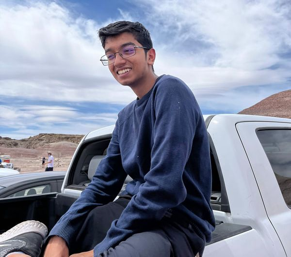

Robotics Engineer
I'm a robotics engineer starting my MS in Robotics Engineering at WPI in Fall 2026. My work spans locomotion control, state estimation, and perception systems — mostly on quadruped robots and autonomous vehicles, mostly in ROS 2. I'm a U.S. citizen based in Bangalore, heading to Worcester, MA.

Associate Robotics Engineer · Bangalore, India
Started on the systems team working on locomotion control, state estimation, and hardware integration for a quadruped robot. Moved to the autonomy team in early 2026, where I designed and built a modular ROS 2 perception framework for autonomous industrial inspection — deployed on real robots for Fortune 500 clients.
Research Intern · Modena, Italy
Six months in Italy working with the RoboRacer.ai F1/10 autonomous racing team. Developed a synthetic dataset generation pipeline and trained a YOLOv4 detector for opponent car detection, achieving 97% accuracy. Also implemented an MPC-curve controller that replaced the existing Pure Pursuit controller and got lateral error under 2 cm.
Technical Trainer · Remote
Delivered lectures on robotics fundamentals to 250+ students across 20+ colleges, covering ROS, URDF, path planning algorithms, and computer vision with OpenCV.
Controls Lead for BITS Goa's Mars Rover team. Autonomous navigation, a 5-DOF robotic arm, and international competition — 2nd place globally at the Anatolian Rover Challenge.
View project 2023 · HiPeRT LabSynthetic dataset generation for opponent detection and MPC-based trajectory tracking on a 1/10th scale autonomous race car.
View project 2024 — 2026 · Strider RoboticsFrom locomotion control to a full perception orchestration framework — two years building software for robots that walk and see in the real world.
View project Open SourceImplementation of the Stanley path-following controller in Python, with a live visualiser. Used on the Kratos Mars Rover.
View on GitHub Open SourceImplementation of the Follow The Gap algorithm for reactive obstacle avoidance on an F1/10 racing car.
View on GitHub Open SourceResources and tutorials for Modules 10 & 11 of Spaceonova's Space Robotics Training Program, covering ROS, URDF, and robot modeling.
View on GitHubContact
I'm always happy to chat about robotics, research, or potential opportunities.